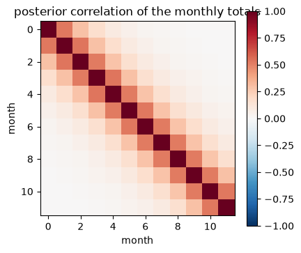
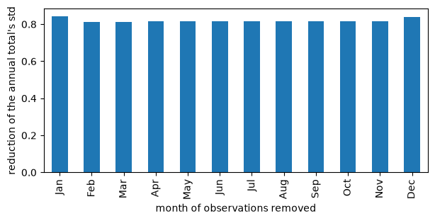
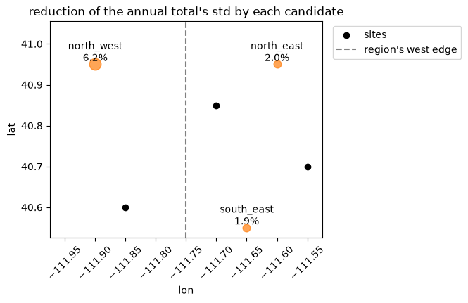

Which observations constrain a regional total?#
An inversion’s answer is often one number: the emissions of a region over a year. This notebook asks how uncertain that number is before and after the observations, what each site contributes to it, and which of a few candidate sites would tighten it most. Every number is exact for the linear Gaussian problem and comes from the posterior already solved: nothing is solved again.
The setup is the one of the regional flux inversion, shortened: a year of monthly fluxes on a 10 x 10 grid, daily concentrations at three sites, a prior correlated in time and space. The observation error is five times larger here (0.01 ppm), so that no single site decides the answer.
import matplotlib.pyplot as plt
import numpy as np
import pandas as pd
import scipy.sparse as sp
import fips
rng = np.random.default_rng(42)
The problem#
footprints builds the forward operator’s rows for any sites and days: each
day a site sees the cells around a point upwind of it, in that day’s month.
The same function will make the rows of the candidate sites.
lons = np.round(np.arange(-111.975, -111.5, 0.05), 3)
lats = np.round(np.arange(40.525, 41.0, 0.05), 3)
months = pd.date_range("2024-01-01", periods=12, freq="MS")
days = pd.date_range("2024-01-01", "2024-12-31", freq="D")
cells = pd.MultiIndex.from_product([months, lats, lons], names=["time", "lat", "lon"])
prior = fips.Vector.from_series(pd.Series(0.05, index=cells), block="flux")
grid_lat, grid_lon = np.meshgrid(lats, lons, indexing="ij")
def footprints(sites, days, rng):
"""Return the forward operator of daily concentrations at `sites` (a frame of lon, lat)."""
labels = pd.MultiIndex.from_product([sites.index, days], names=["site", "obs_time"])
rows, cols, values = [], [], []
upwind = rng.normal(0.0, 0.1, (len(labels), 2))
for i, (site, day) in enumerate(labels):
x = sites.at[site, "lon"] + upwind[i, 0]
y = sites.at[site, "lat"] + upwind[i, 1]
distance = np.hypot(grid_lon - x, grid_lat - y)
rows.append(np.full(grid_lat.size, i))
cols.append((day.month - 1) * grid_lat.size + np.arange(grid_lat.size))
values.append(np.exp(-0.5 * (distance.ravel() / 0.15) ** 2))
matrix = sp.csr_array(
(np.concatenate(values), (np.concatenate(rows), np.concatenate(cols))),
shape=(len(labels), len(cells)),
)
space = fips.Space({"concentration": labels})
return fips.Operator(matrix, space, prior.space)
sites = pd.DataFrame( # the three sites of the regional example, placed by hand
{"lon": [-111.85, -111.7, -111.55], "lat": [40.6, 40.85, 40.7]},
index=pd.Index(["site_a", "site_b", "site_c"], name="site"),
)
forward = footprints(sites, days, rng)
noise = 0.01 # ppm
obs = fips.Vector(
forward.data @ np.full(len(cells), 0.05)
+ 1.9
+ rng.normal(0.0, noise, forward.shape[0]),
forward.rows,
)
problem = fips.Problem(
prior=prior,
prior_cov=fips.Kronecker(
fips.Exponential("time", "60D"),
fips.Exponential(["lat", "lon"], 20.0, metric="haversine"),
).with_std(0.25),
obs=obs,
obs_cov=fips.Independent().with_std(noise),
forward=forward,
offset=1.9,
)
post = fips.solve(problem)
post.summary()[["n_state", "n_obs", "dofs"]]
| n_state | n_obs | dofs | |
|---|---|---|---|
| 0 | 1200 | 1098 | 225.470576 |
The totals: the region’s year, its months, and a seasonal difference#
The region is the eastern half of the grid. fips.aggregate.sum builds the
aggregation W from the state’s own levels: by a yearly pd.Grouper on the
time and a Series that maps the eastern longitudes to "east", and
dropna=True leaves out the western cells, which the Series does not map. The
months of the region are the same with a monthly grouping.
east = pd.Series(
"east", index=pd.Index(lons[lons > -111.75], name="lon"), name="region"
)
annual = fips.aggregate.sum(
prior.space, by=[pd.Grouper(level="time", freq="YS"), east], dropna=True
)
monthly = fips.aggregate.sum(prior.space, by=["time", east], dropna=True)
annual.rows, monthly.rows
(Space(flux: 1 x ['time', 'region']), Space(flux: 12 x ['time', 'region']))
A combination of totals is one more row: the summer (June to August) minus the
winter (December to February), C @ monthly, with C the weights of the
months. Its uncertainty uses the covariance between the months, which the
posterior has; their standard deviations alone could not give it.
month = monthly.rows.select("flux").get_level_values("time").month
weights = np.where(np.isin(month, [6, 7, 8]), 1.0, 0.0) - np.where(
np.isin(month, [12, 1, 2]), 1.0, 0.0
)
summer_minus_winter = (
fips.Operator(
weights[None, :],
fips.Space({"seasonal": pd.Index(["JJA - DJF"], name="what")}),
monthly.rows,
)
@ monthly
)
table = pd.concat([post.uncertainty(annual), post.uncertainty(summer_minus_winter)])
table.index = ["annual total", "summer - winter"]
table.round(3)
| prior_std | posterior_std | reduction | |
|---|---|---|---|
| annual total | 51.281 | 1.037 | 0.980 |
| summer - winter | 24.108 | 0.523 | 0.978 |
post.uncertainty gives each row’s standard deviation before the observations
(prior_std, from problem.prior_cov.aggregate(W)) and after
(posterior_std, from post.cov(W)), and the fraction the observations take
off. The months’ posterior errors are correlated, which is what the seasonal
difference’s standard deviation takes into account:
months_cov = post.cov(monthly).dense()
sd = np.sqrt(np.diag(months_cov))
correlation = months_cov / np.outer(sd, sd)
fig, ax = plt.subplots(figsize=(4.5, 4))
im = ax.imshow(correlation, vmin=-1, vmax=1, cmap="RdBu_r")
ax.set_xlabel("month")
ax.set_ylabel("month")
ax.set_title("posterior correlation of the monthly totals")
fig.colorbar(im, ax=ax);

What each site contributes#
post.data_worth(by="site", W=annual) takes each site out in turn (a rank update of
the posterior covariance, exact, with no new solve) and gives the total’s
standard deviation without the site and with it, the fraction the site takes
off on top of the other two (reduction), and the site’s share of the
degrees of freedom for signal.
by_site = post.data_worth(by="site", W=annual)
by_site.droplevel(["block", "time", "region"]).round(3)
| n_obs | dofs | std_without | std_with | reduction | |
|---|---|---|---|---|---|
| site | |||||
| site_a | 366 | 78.582 | 1.169 | 1.037 | 0.113 |
| site_b | 366 | 80.864 | 1.116 | 1.037 | 0.071 |
| site_c | 366 | 66.025 | 1.208 | 1.037 | 0.142 |
The shares of DOFS of the three sites sum to the problem’s DOFS:
by_site.groupby(level="site")["dofs"].first().sum(), post.dofs
(np.float64(225.4705755130525), 225.4705755071374)
Any level of the observations groups them, a time bin too: which months of observations matter most for the annual total?
by_month = post.data_worth(by=pd.Grouper(level="obs_time", freq="MS"), W=annual)
reduction = by_month["reduction"].droplevel(["block", "time", "region"])
reduction.index = reduction.index.strftime("%b")
ax = reduction.plot.bar(figsize=(7, 3))
ax.set_ylabel("reduction of the annual total's std")
ax.set_xlabel("month of observations removed");

Without one month of observations, the annual total loses most of what the observations gave it: here a day’s concentration sees only the fluxes of its own month, so that month’s fluxes fall back toward the prior, held only by the prior’s 60-day correlation with the months around it.
Which candidate site would help most#
Candidate observations are their rows of the forward operator and the
covariance of their errors, no values. Three candidate sites, observed daily
with the same error as the others: post.candidate_worth adds each on its
own, by the same kind of update, and gives the same columns. The best
candidate for the eastern total need not be one of the eastern sites: the
table, not the map, says which.
candidates = pd.DataFrame(
{"lon": [-111.6, -111.9, -111.65], "lat": [40.95, 40.95, 40.55]},
index=pd.Index(["north_east", "north_west", "south_east"], name="site"),
)
H_new = footprints(candidates, days, rng)
worth = post.candidate_worth(
H_new, fips.Independent().with_std(noise), by="site", W=annual
)
worth.droplevel(["block", "time", "region"]).round(3)
| n_obs | dofs | std_without | std_with | reduction | |
|---|---|---|---|---|---|
| site | |||||
| north_east | 366 | 49.114 | 1.037 | 1.016 | 0.020 |
| north_west | 366 | 60.430 | 1.037 | 0.973 | 0.062 |
| south_east | 366 | 43.673 | 1.037 | 1.017 | 0.019 |
fig, ax = plt.subplots(figsize=(5, 4))
ax.scatter(sites["lon"], sites["lat"], color="black", label="sites")
for name, row in candidates.iterrows():
gain = worth.xs(name, level="site")["reduction"].iloc[0]
ax.scatter(
row["lon"], row["lat"], s=2000 * gain + 20, color="tab:orange", alpha=0.7
)
ax.annotate(
f"{name}\n{gain:.1%}", (row["lon"], row["lat"]), ha="center", va="bottom"
)
ax.axvline(-111.75, color="gray", linestyle="--", label="region's west edge")
ax.set_xlim(lons.min(), lons.max())
ax.set_ylim(lats.min(), lats.max() + 0.08)
ax.set_xlabel("lon")
ax.set_ylabel("lat")
ax.set_title("reduction of the annual total's std by each candidate")
ax.tick_params(axis="x", labelrotation=45)
ax.legend(loc="upper left", bbox_to_anchor=(1.02, 1));

The numbers are exact for this problem: solving it again with a candidate’s observations added gives the same standard deviation. Here, the check for one:
name = "north_east"
keep = H_new.rows.select("concentration").get_level_values("site") == name
labels = problem.obs.space.select("concentration").append(
H_new.rows.select("concentration")[keep]
)
space = fips.Space({"concentration": labels})
bigger = fips.Problem(
prior=prior,
prior_cov=problem.prior_cov,
obs=fips.Vector(np.concatenate([obs.values, np.zeros(keep.sum())]), space),
obs_cov=fips.Independent().with_std(noise),
forward=fips.Operator(
sp.vstack([forward.sparse(), H_new.sparse()[keep]]).tocsr(), space, prior.space
),
offset=1.9,
)
again = np.sqrt(fips.solve(bigger).cov(annual).variances.values)
np.c_[worth.xs(name, level="site")["std_with"].to_numpy(), again]
array([[1.01625949, 1.01625949]])
Notes#
data_worthremoves a group from the problem as it is, so a site that repeats what another sees shows little worth on its own even if the pair together matters; remove both (a coarserby) to see that.candidate_worthadds each group to the problem as it is; for a network of several new sites, give them one group label.The candidates’ errors are taken to be independent of the problem’s observations, and are divided by
gammaas the problem’s are.